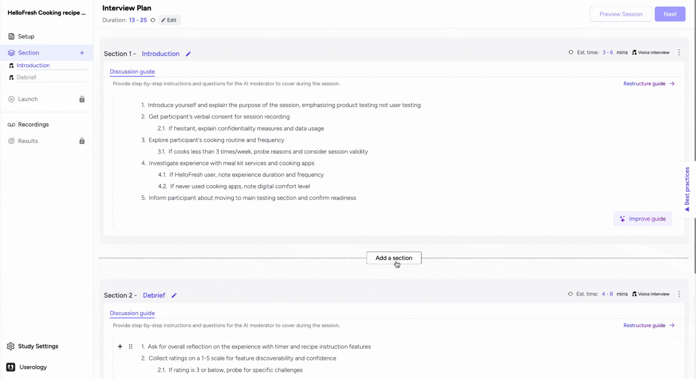
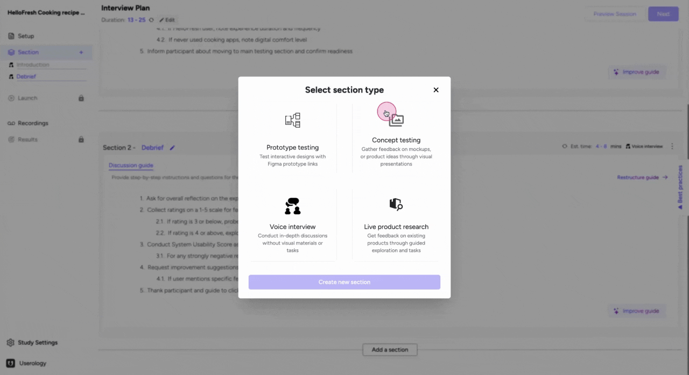
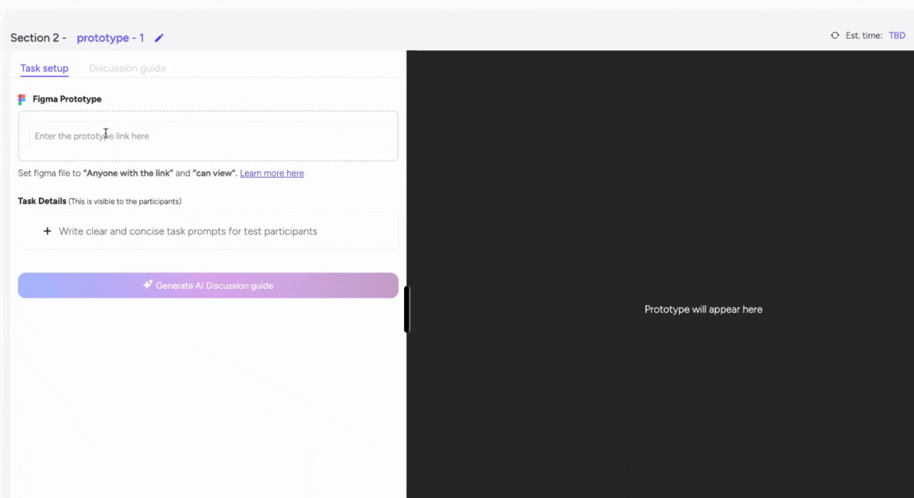
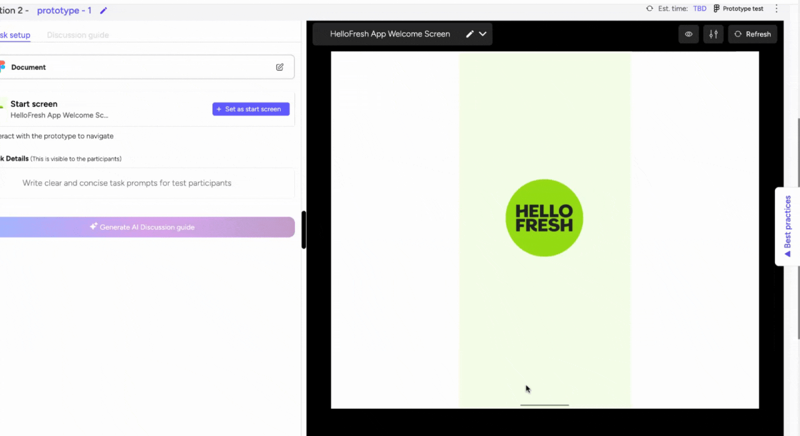
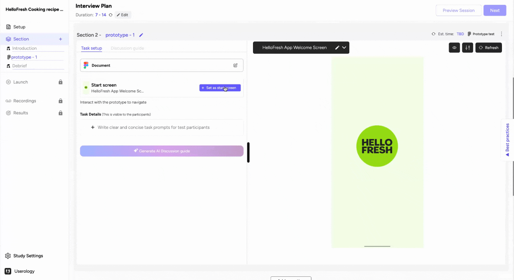
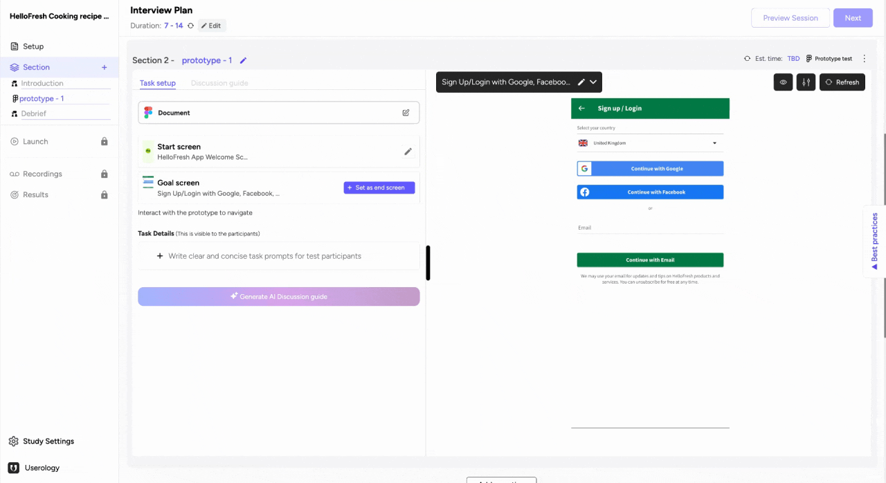
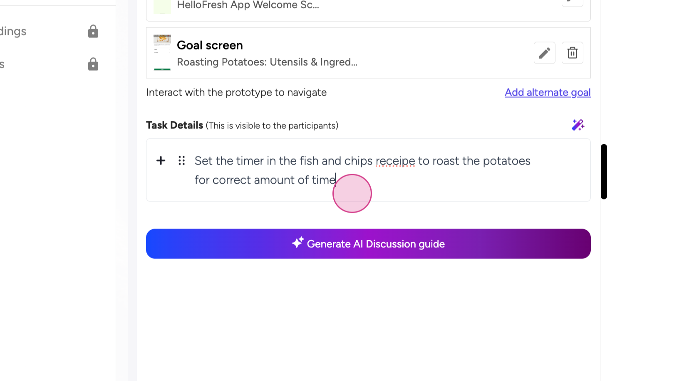
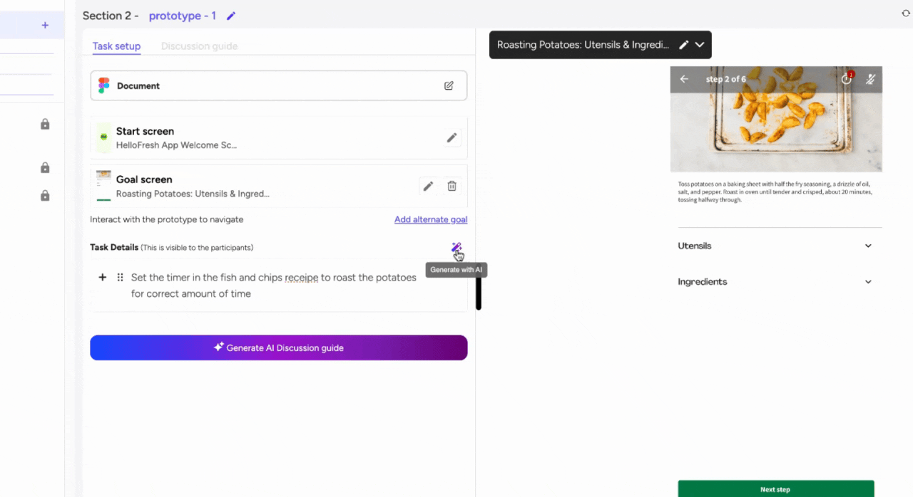
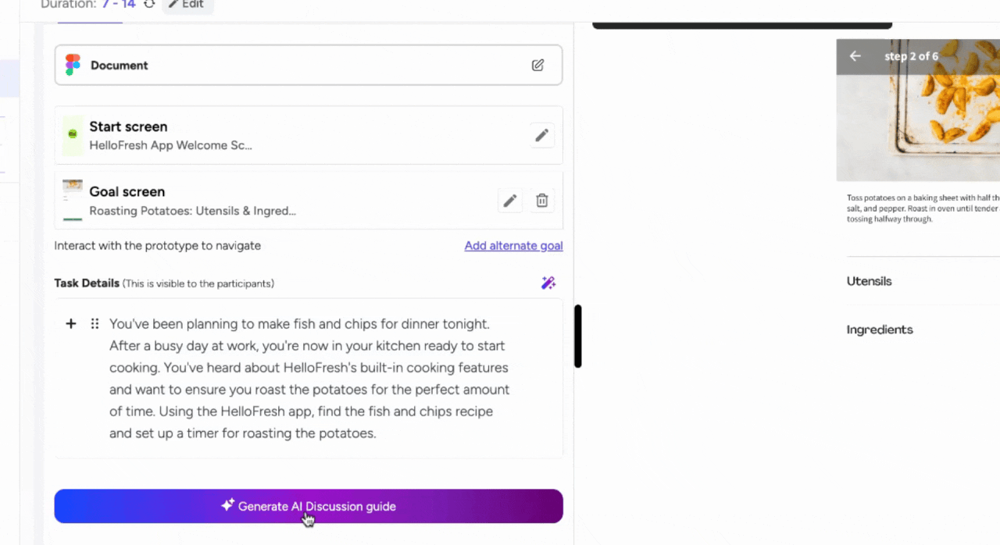

Prototype Sections allows you to get feedback on your Figma prototypes. A prototype section can be added anywhere in the interview plan and requires you to provide a Figma prototype link and brief task that the user needs to perform. We will cover how to set up tasks, use the AI rephrase feature, and generate an AI discussion guide in Userology.
Key Steps
-
Add a Section in the Interview Plan.
-
Add a Prototype Section.
-
Provide a Prototype Link.
-
Set Start and Goal Screens for Tasks.
-
Improve Tasks with AI.
-
Generate and Edit an AI Discussion Guide.
-
Troubleshooting.
Detailed Step-by-Step Guide
Step 1: Add a Section in the Interview Plan
- You can add sections anywhere in the interview plan.
- This can be done from the left navigation bar or in between any two sections.
- Tip: Use sections to organize your interview plan for better clarity.

?
Step 2: Add a Prototype Section
- To add a prototype section:
- Click on the desired location.
- A new prototype section will be created.
- Best Practice: Place prototype sections where they align with your interview flow.

?
Step 3: Provide a Prototype Link
After creating a prototype section:
- Provide the prototype link.
- The prototype will load on the right-hand side of the screen.
- Note: Ensure the link is active and visible to all participants to avoid errors.

You can modify the size of your prototype just like Figma

?
Step 4: Set Start and Goal Screens for Tasks
- Tasks are generally associated with prototype testing.
- To set up tasks:
- Define the start screen.
- Define the goal screen.
- Tip: The AI will understand that the user is expected to navigate from the start screen to the goal screen to complete the task.
?
You can click and navigate on the prototype on the right hand side

Step 5: Improve Tasks with AI
After defining the basic task detail, you can use AI to make it follow best practices.
- The AI feature allows you to modify tasks and make them more scenario-based.
Evaluates the current task on
-
Representation of a Real-Life Scenario
-
Leading language
-
Internal Keyword
-
Unclear Instructions
-
Incomplete Instructions
After evaluation suggests a better alternative of task details



Step 6: Generate and Edit an AI Discussion Guide
- To generate an AI discussion guide:
- Click on 'Generate AI Discussion Guide.'
- The AI will analyze the prototype, map the user journey, and create a detailed guide.
- Customization: You can modify the guide as needed to suit your requirements.

?
The discussion guide in the edited naturally as instructions to AI moderator.

Troubleshooting
Common Issues and Solutions
- Error Loading Prototype: Ensure the prototype link is active and correctly entered.
- Task Not Saving: Refresh the page and try again.
- AI Guide Generation Error: Wait a few moments and retry. If the issue persists, contact support.
Support & Feedback
If you need further assistance or have any feedback, feel free to reach out to us at support@userology.co ?We?re here to help!